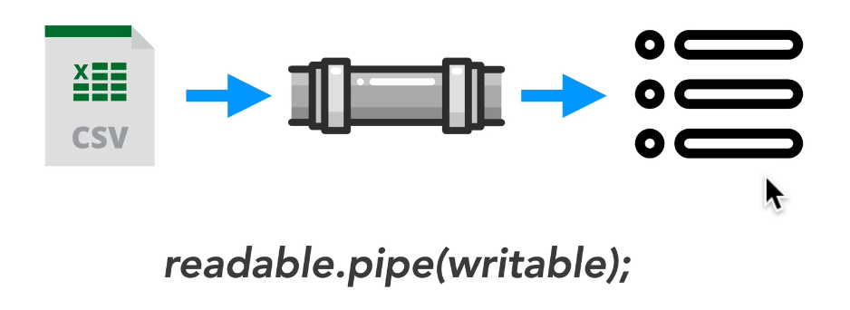
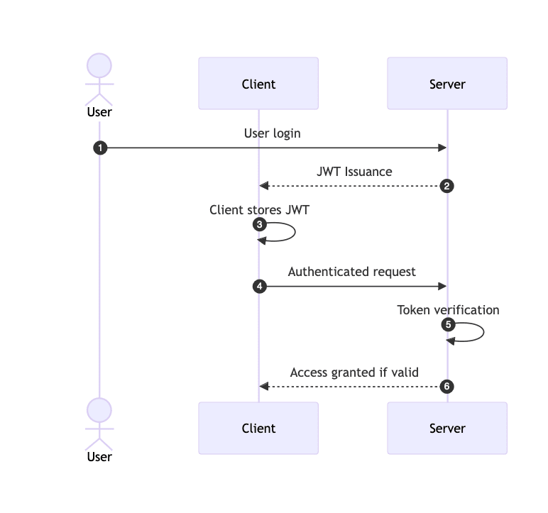
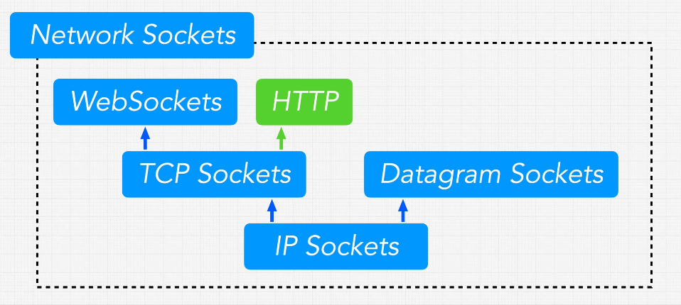
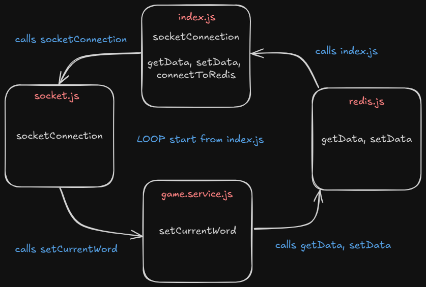

FROM ZTM COURSE AND CODEVOLUTION (youtube (to learn imp concepts))
Code Keen (advancebackend.com)
backups, scaling, and advanced topics like Python ORMs, CAP theorem, and ACID compliance.
Node REPL = read evaluate print loop
JavaScript is synchronous / single threaded but in Web V8 engine is run in Web API’s which make it asynchronous.
Node(V8) has some reserved token so it separates them from words which it can’t understand and pass them to Node.js APIs which then use libuv to interact with OS or Threads init.
Event Loop
Node runs an EVENT LOOP for asynchronous operations by making Threads (from a Thread pool of 4(default) Threads) or use our OS to run operations in it’s own call-stack (FIFO). This call-stack is called EVENT QUEUES.

Now EVENT LOOP has many Phases (here are only main Phases):
- Timer - setTimeout , setInterval
- I/O callbacks - network and file operations and anything that doesn’t fit in other phases
- setImmediate - runs immediately after all I/O operations are done
- Close callbacks - closing files networks
Node.js is an Events-driven which follows an Observer pattern.
const EventEmitter = require('node:events');
const MyEmitter = new EventEmitter();
MyEmitter.on('event' , ()=>{
console.log('event occured');
})
// passing event to MyEmitter
MyEmitter.emit('event');
// ==============================================
// OUTPUT : event occured
// ==============================================Process which is an event emitter :
IN TERMINAL :
node name_of_file.js somethingIN name_of_file.js :
process.argv.forEach((val , index)=>{
console.log('${index}: ${val}');
});
// OUTPUT :
// 0: node
// 1: name_of_file.js
// 2: somethingprocess.argv is an array that has elements as follows : process.argv = [ process.execPath , name_of_js_file , arguments… ]
So process.on is also an observer like MyEmitter.on (in above example) :
process.on('exit' , (code)=>{
console.log('Process exit event with an code: ', code);
})
// ====================================================
// OUTPUT : Process exit event with an code: 0
// ====================================================// ========================================================
// Method 1 : To securely only receive data (get end() automatically)
const { get } = require('https');
get('https://www.google.com' ,(res)=>{
res.on('data' ,(chunk)=>{
console.log(`Data chunk: ${chunk}`);
});
res.on('end' , ()=>{
console.log('NO more data');
});
});
// ==========================================================
// Method 2 : To securely receive and send data
const { request } = require('https');
const req = request('https://www.google.com' ,(res)=>{
res.on('data' ,(chunk)=>{
console.log(`Data chunk: ${chunk}`);
});
res.on('end' , ()=>{
console.log('NO more data');
});
})
req.end();
// ==========================================================
// Method 3 : To receive and send data
const { request } = require('http');
const req = request('http://www.google.com' ,(res)=>{
res.on('data' ,(chunk)=>{
console.log(`Data chunk: ${chunk}`);
});
res.on('end' , ()=>{
console.log('NO more data');
});
})
req.end();When we import using require in a program the file/module is executed and then store in require.cache . So if we do ‘require’ multiple time it returns the function which is exported and does not rerun it.
if we try to ‘require’ a folder, node automatically exports any file with name ” index.js “.
AXIOS :
const axios = require('axios');
axios.get('https://www.google.com')
.then((res)=>{
console.log(res);
})
.catch((err)=>{
console.log(err);
});Stream and Buffers :
Stream is to wait for a minimum chunk of data (data received before minimum data is reached is stored in a BUFFER) and load it when reached and then wait for another chunk of data to load.
const buffer = new Buffer.from('dhruv');
buffer.write('codevolution');
console.log(buffer.toString());
console.log(buffer);
console.log(buffer.toJSON());
// ======================================================
// OUTPUT :
// codev
// <Buffer 63 6f 64 65 76>
// { type: 'Buffer', data: [ 99, 111, 100, 101, 118 ] }
// ======================================================
// <Buffer 63 6f 64 65 76> : this is in hexadecimals
// { type: 'Buffer', data: [ 99, 111, 100, 101, 118 ] } : are UNICODE/ASCII code
Connect Streams :

fs.createReadStream('kepler-data.csv')
.pipe(parser)Like above, after reading a chunk of data received from a fs stream it is piped to csv parser to parse the data from csv to objects/json.
MVC (Model - View - Controller) pattern :

ROUTER :
Routers are used to bundle a group of controllers who have same base endpoint . So this isolates this bundle from others and we can make router folder like controllers.
For Example :
// =======================================================
// Here friendsController is an js file in controllers file
// from which post and get friend fuction are exported.
// =======================================================
// without routes
app.post('/friends' , friendsController.postFriend);
app.get('/friends' , friendsController.getFriend);
app.get('/friends/:friendId' , friendsController.getFriend);
// =======================================================
// with routes
const friendRouter = express.Router();
app.use('/friends' , friendsRouter);
friendRouter.post('/' , friendsController.postFriend);
friendRouter.get('/' , friendsController.getFriends);
friendRouter.get('/:friendId' , friendsController.getFriendById);
we can know IP address of each request by
req.ip
NOTE : In LINUX and MAC path to a folder is /folder/file but in Windows path is \folder\file Therefore use path
const path = require('path');
path.join(__dirname , '..' , public , 'file-name');
To share files/pdf/images :
// ===========================================================
// To send a file for example .jpg use sendFile
res.sendFile( path.join(__dirname , '..' , public , 'file-name.jpg') );To send some static files like html css js we can use express.static() middleware.
app.use(express.static(path.join(__dirname , 'public')));GrTEMPLATE ENGINES :
Template engines are used to render dynamic pages which changes as values which are passed are changed. We will use Handlebars as our Template engine but , first we have to let node know that we are going to use which template engine.
// app.set() includes all settings in node.js so we can set values according to our choice.
app.set('view engine' , 'hbs');
app.set('views' , path.join(__dirname , 'views'));PROMISES :
const promise1 = new Promise((resolve,reject)=>{
// Calculations
resolve(answer);
})
// result == answer
promise1.then((result)=>{
console.log(result);
})
// OR
const result = await promise1;TESTING ( JEST ):
- Test runner : find test files (
jest) . - Test fixtures : test fixture are functions which run test of respective modules (
describe()). - Assertions : function telling what we expect (
expect(output).toBe(expected_value)). - Mocking : where operations doesn’t change our data in database permanently.
describe('test group name', ()=>{
test('name of 1st test', ()=>{
const response = 200;
expect(response).toBe(200);
});
test('name of 2nd test', ()=>{
// next test
});
// other tests
})NOTE :
"test": "jest",
// npm run test ==> check only once
"test-watch": "jest --watch"
// npm run test-watch ==> check once and if respective modules/test is upated SUPERTEST (for making a test request to our endpoints) :
const request = require('supertest');
const path = require('path');
const { app } = require(path.join('..', '..', 'app.js'));
describe('Test launches', () => {
const testlaunch = {
mission: "MSI 1",
rocket: "ISE 1",
launchDate: "January 17, 2030",
target: "Kepler-1410 b"
};
test('GET/launches', async () => {
const response = await request(app)
.get('/launches')
.expect('Content-Type', /json/)
.expect(200);
});
test('POST/launches 201 creation test', async () => {
const response = await request(app)
.post('/launches')
.send(testlaunch)
.expect('Content-Type', /json/)
.expect(201);
const responseDate = new Date(response.body.launchDate).valueOf();
const ogDate = new Date(testlaunch.launchDate).valueOf();
expect(responseDate).toBe(ogDate);
expect(response.body).toMatchObject({
mission: "MSI 1",
rocket: "ISE 1",
target: "Kepler-1410 b"
})
});
test('POST/launches 400 catch missing properties error', async () => {
const testlaunch = {
mission: "MSI 1",
rocket: "ISE 1",
target: "Kepler-1410 b"
};
const response = await request(app)
.post('/launches')
.send(testlaunch)
.expect('Content-Type', /json/)
.expect(400);
expect(response.body).toStrictEqual({error: 'Insufficient data'})
});
test('POST/launches 400 catch invalid Date error', async () => {
const testlaunch = {
mission: "MSI 1",
rocket: "ISE 1",
target: "Kepler-1410 b",
launchDate: "adfasd",
};
const response = await request(app)
.post('/launches')
.send(testlaunch)
.expect('Content-Type', /json/)
.expect(400);
expect(response.body).toBe('Wrong Date')
});
})PERFORMANCE OPTIMISATION :
Node default Async process ⇒ FILE IO process , NETWORK process (like requesting or sending data over network) ,
Node default Sync process ⇒ LOOPS , SORT , JSON.stringify(), JSON.parse(), Cyptro functions (some key derivation functions which means they are used to make hash keys like - crypto.pbkdf2() and crypto.scrypt() functions) .
*Example : if every JSON.stringify() or JSON.parse() takes 10ms and run on Sync Event loop thread then many request can pile up the delay.
CLUSTER (round-robin method):
node server.js --> master --> fork() worker
--> fork() worker
....
round-robin method ⇒ first request goes to first worker, second request to second worker, and so on till end and then again to first worker.
PM2 (comes with build in clustering and is used to manage processes) :
- pm2 with using node.js build in cluster module
const express = require('express');
const app = express();
const os = require('os');
const cluster = require('cluster');
app.get('/',(req,res)=>{
res.send(`Performance example ${process.pid}`);
});
app.get('/timer', (req,res)=>{
const starTime = Date.now();
while(Date.now() - starTime < 9000){
}
res.send(`delayed ${process.pid}`);
})
console.log('Running server.js');
if(cluster.isPrimary){
console.log('Master ...');
const NUM_WORKER = os.cpus().length; // returns number of CPUS
for(let i=0; i<NUM_WORKER; i++){
cluster.fork();
}
}
else{
console.log('Worker ...');
app.listen(3000);
}pm2 start server.js --> starts cluster mode in server.js
--> make worker process as defined in server.js
pm2 stop server.js / id --> obviously stops the process but
does not delete cluster from pm2
pm2 delete server.js --> stops and delete server.js cluster from
pm2
pm2 list / pm2 staus --> print current online or stopped clusters
pm2 restart server.js --> Restarts the server after it is stopped
pm2 logs --> list all logs
pm2 logs --lines --> prints "lines" number of lines of logs.
pm2 start server.js -l logs.txt --> store logs in logs.txt
- using pm2
const express = require('express');
const app = express();
app.get('/',(req,res)=>{
res.send(`Performance example ${process.pid}`);
});
app.get('/timer', (req,res)=>{
const starTime = Date.now();
while(Date.now() - starTime < 9000){
}
res.send(`delayed ${process.pid}`);
})
console.log('Running server.js');
console.log('Worker ...');
app.listen(3000);But why we define cluster in server.js when pm2 can do it for us
So remove all thing about cluster form server.js
pm2 start server.js -i number_of_worker
--> starts instances(-i) / worker according to number of given
pm2 start server.js -i max
--> to start maximum number of processes
pm2 show id_of_worker --> shows all data about that id worker.
pm2 monit --> opens a live monitor for all processes.
Zero Down Time approach :
If we want to change some code in production and if all servers are restarted by pm2 restart server then for sometime no request will be processed so to handle this Zero Down Time approach is used pm2 reload server where , workers are restarted one by one.
Cluster vs Web Workers :
Clusters works in single process and have build-in method to pass request to different worker but all worker don’t share any data among them as each worker work on different thread on CPU cores. cluster module allows us to create child processes that all share server ports.
In web worker all worker thread work independently and can share data among them. Process vs Thread (ByteByteGo)
Cluster --> distribute work among processes (running on each core)
worker thread --> distribute work among thread in a process.

WORKER THREADS
const {isMainThread , Worker} = require('worker_threads');
// Syntax : new Worker(filename, [options])
// Syntax : new Worker(path to file which will work this worker thread)
new Worker(__filename);
// ==> this will make infinite number of worker threads as each thread will make new thread inshort it will f*ck up system at the end.
// so like Cluster we will make Worker only if it is main thread
if(isMainThread){
new Worker(__filename);
new Worker(__filename);
}
else{
console.log('Worker');
}const {isMainThread , workerData, Worker} = require('worker_threads');
if(isMainThread){
new Worker(__filename, {
workerData : [1,3,123,9,70]
});
new Worker(__filename, {
workerData : [45,2,12,0,-8]
});
console.log(`Main ${process.pid}`);
}
else{
console.log(`Worker ${process.pid}`);
console.log(`${workerData} sorted is : ${workerData.sort((a, b) => a - b)}`);
}OUTPUT :
Main 17316
Worker 17316
1,3,123,9,70 sorted is : 1,3,9,70,123
Worker 17316
45,2,12,0,-8 sorted is : -8,0,2,12,45HELMET.js (Helmet.js)
Helmet helps secure Express apps by setting HTTP response headers.
OAuth 2.0 code flow :

We can restrict an specific endpoint by passing a middleware for that endpoint
function checkLoggedIn(req, res, next){
// necessary checks
}
function checkPermissions(req, res, next){
// necessary checks
}
app.get('/secret', checkLoggedIn, checkPermissions, (req, res) => {
// return back user data if logged in and has necessary permissions
});
app.get('/', (req, res)=>{
res.sendFile(path.join(__dirname , 'public'));
});
// Here '/secret' path is only accessible after necessary checks while '/' path is accessible by all users.JWT
JWT (JSON Web Token) is an open standard (RFC 7519) that defines a compact and self-contained way for securely transmitting information between parties as a JSON object. This information can be verified and trusted because it is digitally signed.
A JSON Web Token consists of three parts:
- Header
- Payload
- Signature
These parts are separated by dots (
.) and are represented asheader.payload.signature.
Example Flow
- User Logs In: User provides credentials (username and password).
- Server Verifies Credentials: Server verifies the credentials and, if valid, creates a JWT.
- Token Sent to User: The JWT is sent back to the client.
- Client Stores Token: The client stores the token (e.g., in localStorage or cookies).
- Subsequent Requests: The client includes the token in the
Authorizationheader of future requests. - Server Verifies Token: The server verifies the token and processes the request. 
Generate random secret key for digital signing (run in bash) :
openssl rand -base64 32Sockets :

Learn Socket.io In 30 Minutes (youtube.com) Everything You Need To Know About Socket.IO - DEV Community
Note :
server.use()/io.use()middleware runs before every socket connection butsocket.use()middleware runs before every packet is received.therefore do authentication inside
server.use()/io.use().
How to send recieve cookies over socket :
Server Side :
app.use(cors({
origin:'http://localhost:5173', // as 'Access-Control-Allow-Origin' header in the response must not be the wildcard '*' when the request's credentials mode is 'include'.
credentials: true, // enable credentials
}));
// socket connection :
const io = new Server(server, {
cors: {
origin: ['http://localhost:5173', 'https://admin.socket.io/', 'https://admin.socket.io/#/'],
credentials: true, // enable credentials
}
});
io.use((socket, next)=>{
console.log(socket.request.headers.cookie);
// verify the cookie here
next();
})Client Side :
async function httpSignup(signupdetails: signupdetails) {
try {
const request = await fetch(`${APT_URL}/signup`, {
method: 'post',
credentials: 'include', // to get the cookies in Response Header
headers: {
'Content-Type': 'application/json',
},
body: JSON.stringify(signupdetails),
});
const response = await request.json();
response.ok = true;
return response;
}
catch (err) {
return { error : "Server Error", ok: false }
}
}
// socket connetion :
const createSocketConnection = () => {
socket = io('http://localhost:3000', {
withCredentials: true // to pass cookies to socket
});
}Circular dependencies :
When 2 modules depends somehow on each other. 
KNIP
(Find unused files, dependencies and exports in JavaScript and TypeScript projects) :
NOTE : Knip is a static analysis tool and so can’t recognize dynamic imports that use the path module or alias path
Therefore don’t use knip in frontend (as UI libraries like shadcn use alias or *(all) import)
// when you import using path module knip can't recognize the import
// --------------** WRONG **-------------->
const path = require('path');
const mongoServices = require(path.join(__dirname, 'mongo.js'));
const socketServices = require(path.join(__dirname, 'socket.js'));
// but when you use relative path knip recognize it
// --------------** RIGHT **-------------->
const mongoServices = require('./mongo.js');
const socketServices = require('./socket.js');To setup knip :
- Run
npm init @knip/configin terminal - make a file
knip.config.js
// knip.config.js :
export default {
"entry": ["src/{server,app}.js", "src/config/index.js", "src/utils/index.js"],
"project": ["src/**/*.js"]
}NOTE : all files in backend code folder with default export must be listed in entry field of knip config file
Caching :
Fetching data is 𝘀𝗹𝗼𝘄. Caching speeds things up by storing frequently accessed data for quick reads. But how do you populate and update the cache? That’s where strategies come in.
🔍 Read Strategies:
𝗖𝗮𝗰𝗵𝗲 𝗔𝘀𝗶𝗱𝗲 (Lazy Loading)
- How it works: Tries cache first, then fetches from DB on cache miss
- Usage: When cache misses are rare or the latency of a cache miss + DB read is acceptable
𝗥𝗲𝗮𝗱 𝗧𝗵𝗿𝗼𝘂𝗴𝗵
- How it works: Cache handles DB reads, transparently fetching missing data on cache miss
- Usage: Abstracts DB logic from app code. Keeps cache consistently populated by handling misses automatically
📝 Write Strategies:
𝗪𝗿𝗶𝘁𝗲 𝗔𝗿𝗼𝘂𝗻𝗱
- How it works: Writes bypass the cache and go directly to the DB
- Usage: When written data won’t immediately be read back from cache
𝗪𝗿𝗶𝘁𝗲 𝗕𝗮𝗰𝗸 (Delayed Write)
- How it works: Writes to cache first, async write to DB later
- Usage: In write-heavy environments where slight data loss is tolerable
𝗪𝗿𝗶𝘁𝗲 𝗧𝗵𝗿𝗼𝘂𝗴𝗵
- How it works: Immediate write to both cache and DB
- Usage: When data consistency is critical
🚀 Real-Life Usage:
𝗖𝗮𝗰𝗵𝗲 𝗔𝘀𝗶𝗱𝗲 + 𝗪𝗿𝗶𝘁𝗲 𝗧𝗵𝗿𝗼𝘂𝗴𝗵
This ensures consistent cache/DB sync while allowing fine-grained cache population control during reads. Immediate database writes might strain the DB.
𝗥𝗲𝗮𝗱 𝗧𝗵𝗿𝗼𝘂𝗴𝗵 + 𝗪𝗿𝗶𝘁𝗲 𝗕𝗮𝗰𝗸
This abstracts the DB and handles bursting write traffic well by delaying sync. However, it risks larger data loss if the cache goes down before syncing the buffered writes to the database.

Important points :
const requestData = {
[req.body.field]: req.body.value
};In this code, we use square brackets
[]aroundreq.body.fieldto create a dynamic key based on the value ofreq.body.field, and then assignreq.body.valueas the value associated with that key. This will create a JSON object with the structure you desire.
The optional chaining operator
?.allows you to safely access properties or call methods on possibly null or undefined values without causing an error. If the value before?.is null or undefined, the entire expression evaluates to undefined without attempting to access the property or call the method after?.. In the code snippet you provided,launches?.filter(...)is using optional chaining to ensure that thefiltermethod is only called iflaunchesis not null or undefined. Iflaunchesis null or undefined, the expression evaluates to undefined, and the subsequentmapmethod call will not be executed, preventing a TypeError.
Javascript Hidden Classes and Inline Caching in V8 (richardartoul.github.io)
Optimization killers · petkaantonov/bluebird Wiki (github.com)